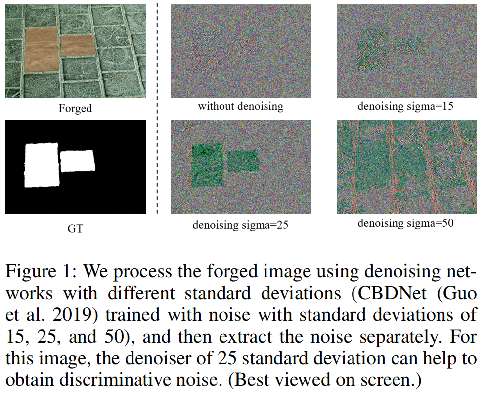
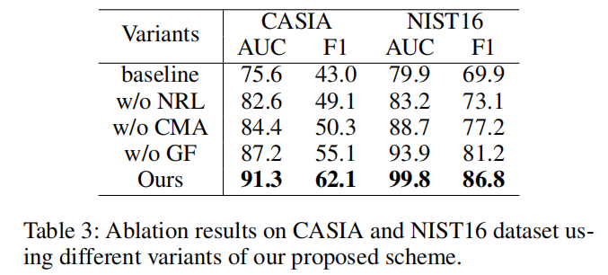
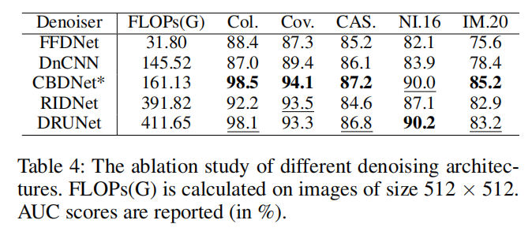
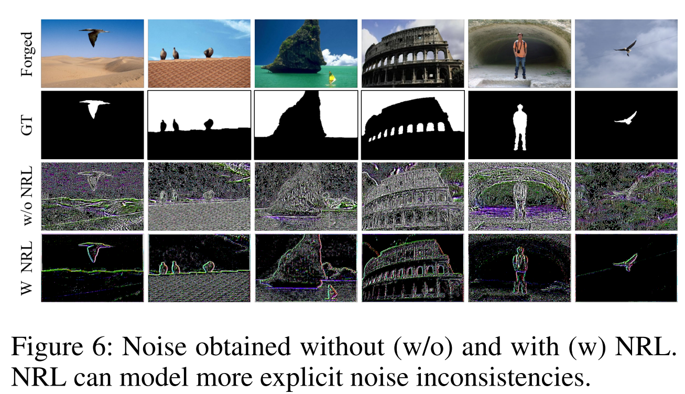

Learning Discriminative Noise Guidance for Image Forgery Detection and Localization
\(\text{Jiaying Zhu}^*,\text{Dong Li}^*,\text{Xueyang Fu}^\dagger,\text{Gang Yang, Jie Huang, Aiping Liu, Zheng-Jun Zha}\)
论文（arxiv）
1. 摘要
随着篡改和后处理技术的发展，这两个区域在噪声域之间的差异变得不那么明显，甚至不那么隐藏。鉴于这些缺陷，我们建议明确地学习和利用噪声的不一致性可以进一步提高IFDL的性能。
本研究介绍了一种新的图像伪造检测和定位方法，该方法通过关注噪声域内的操纵痕迹来检测和定位图像伪造。我们假设RGB图像中几乎看不见带有篡改痕迹的噪声，有助于识别和定位伪造品。然而，篡改技术的进步使噪声用于伪造检测的直接应用变得复杂，因为伪造区域和真实区域之间的噪声不一致性没有得到充分利用。为了解决这一问题，我们开发了一种两步判别噪声引导的方法，以明确地增强一致性中噪声的表示和使用，从而充分利用噪声信息来提高伪造检测的准确性和鲁棒性。
具体而言，我们使用去噪网络和基于统计量的约束，增强了伪造区域与真实区域之间的噪声可识别性。然后，我们将模型驱动的引导学习机制与数据驱动的注意力机制相结合，创建了一个可学习且可微分的噪声引导学习机制。这种复杂的滤波器使我们能够从噪音中学习到的伪造区域的边缘。在多个数据集上的综合实验表明，我们的方法可以可靠地检测和定位伪造品，超过了现有的最先进的方法。
2. 引言
真实区域和伪造区域的噪声分布则不一致，导致噪声域中的操纵痕迹。许多研究人员已经利用这种噪音信息来图像伪造信息的检测与定位，实现了显著的结果。这些方法直接构建噪声特征到掩模的端到端映射，并采用融合策略集成RGB和噪声信息，以提高伪造检测精度。然而，随着篡改和后处理技术的发展，这两个区域在噪声域之间的差异变得不那么明显，甚至不再是隐含的关系。
鉴于这些缺陷，我们建议明确地学习和利用噪声的不一致性可以进一步提高IFDL的性能。因此，我们引入了一种新的两步噪声引导方案。
第一阶段，训练一个噪声提取器，以明确地扩大真实区域和伪造区域之间的噪声分布差异。我们使用去噪网络，然后使用Bayar
卷积来构建噪声提取器，并使用基于统计的约束进行优化。使用去噪器的基本原理源于一个合适的去噪网络可以放大两个区域间的噪声分布差异。
如图1所示，标准差为25的去噪网络在噪声域内最大化了真实区域和伪造区域之间的差异，而直接提取的噪声不能达到相同的效果。

图1：我们使用不同标准差的去噪网络（CBDNet (Guoet al.
2019），用标准差为15、25、50）对伪造图像进行处理，然后分别提取噪声。对于该图像，25个标准差的去噪器可以帮助获得鉴别噪声。
为了自适应地调整去噪网络，我们基于高斯分布的Jensen-Shannon（JS）散度对处理后的图像噪声施加自定义约束。
第二阶段是将噪声不一致和RGB数据集成，以进行伪造检测和定位。与之前的融合策略不同，我们明确地利用噪声来指导RGB分支，显著提高了有效性。我们将手工制作的引导变换（He，Sun，和Tang
2012）和数据驱动的注意力机制（Wang et al.
2018）合并，创建了基于交叉注意力的引导滤波器（CAGF，the
Cross-Attention-Based Guided
Filter）。由于引导变换的局部线性和边缘保存，CAGF不仅充分集成了RGB和噪声域的互补信息，而且确保了结构信息从噪声域到RGB域的传输。
本质上，我们的方法明确地学习了第一阶段的噪声不一致，并在第二阶段利用了这种表示。
我们的贡献如下：
1.
我们提出了一种新的判别噪声引导方案，该方案明确增强了噪声不一致性的表示和利用。
2.
我们开发了一种方法来突出伪造区域中的噪声不一致性，使用去噪网络来处理图像，并使用基于统计的约束来优化噪声提取。
3.
我们设计了一种基于交叉注意力的引导滤波器，它结合了模型驱动和数据驱动技术，充分利用伪造信息的噪声表示，显著增强了噪声不一致对RGB分支的引导效果。
在几个有代表性的基准上进行的广泛实验表明，我们的方法优于最先进的方法，特别是在真实数据集IMD20(Novozamsky, Mahdian, and Saic 2020)上。
3. 方法
源图像和目标图像之间的噪声特征不太可能匹配（Zhou et al.
2018），篡改操作破坏了自然噪声分布（Wang et al.
2022a）。此外，使用噪声可以抑制内容信息，这有利于提取IFDL的语义不可知的特征（Chen
et al.
2021）。然而，随着篡改和后处理技术的发展，噪声的不一致性并不明显，不再是隐含的关系。我们认为，明确地挖掘和利用噪声不一致性可以进一步提高精度和鲁棒性。
因此，我们提出了一种两步策略，来充分利用IFDL的噪声不一致性，包括噪声表示学习和噪声引导网络。
首先，我们提出了一种使用去噪网络和自定义约束的学习方案。输入图像用
$ X R^{H×W×3} $
表示，其中H和W表示图像的高度和宽度。将X输入去噪网络得到图像 $ X^{'} $
，然后用BayarConv (Wu, AbdAlmageed, and Natarajan 2019)提取噪声 $ G_d
R^{H×W×3} $
。去噪网络的选择不是本工作的重点，所以我们使用广泛使用的CBDNet（Guo et
al. 2019）来权衡性能和计算量。我们对 $ G_d $
施加了基于统计的约束，以确保这两个区域的噪声分布被分开。
其次，我们训练噪声引导网络（NGNet,
noise-guided
network）显式地应用噪声不一致性。NGNet是一个双分支网络，它包含多个基于交叉注意力引导的信号，逐步引导具有噪声不一致的RGB信息，以获得更准确的IFDL。
3.1 噪声表示学习
为了明确地表示噪声的不一致性，我们设计了一个噪声表示学习网络（NRLNet, noise representation learning network），如图2a所示，它使用一个去噪网络来处理图像和统计损失来优化网络。考虑到伪造图像的噪声分布未知，我们使用盲去噪网络CBDNet（Guo et al. 2019)，并加载盲去噪的权值作为初始化。
具体的体系结构和培训策略如下所述。
我们使用一个基于CBDNet的网络来处理输入的图像X。具体地说，我们预测了一个噪声水平图
$~ \hat{l} \in R^{H×W×3} $ ，它可以看作是与噪声分布相关的权值。然后将 $
$ 和输入X一起输入编码解码器结构，得到图像 $~ X^{'} \in R^{H×W×3} $
，表示为： \[\hat{l}=\mathrm{NE}\left(X\right)\\X^{'}=\mathrm{D}\left(\mathrm{Concat}\left(X,\hat{l}\right)\right)\]
其中，Concat表示连接操作。NE是由5层全卷积网络实现的噪声估计模块，卷积核大小为3×3。D是一种U-Net架构，它可以获得具有鉴别噪声的图像。
然后，跟随（Chen
et al. 2021），我们采用BayarConv从 $ X^{'} $ 中提取噪声 $~ G_d \in
R^{H×W×3} $
。此外，为了使学习到的噪声更有利于IFDL，我们将噪声输入Res-CNN，以预测粗定位结果
$~ G_c \in R^{H×W×1} $
。Res-CNN包含10个res-块，其中一个块由两个3×3卷积和ReLU函数组成。
最优化。为了明确地分离出这两个区域（真实的和伪造的）的噪声分布，我们引入了JS散度来约束
$ G_d $ 。首先，我们利用 groundtruth掩模，将 $ G_d $ 划分为真实区域 $
N_a $ 的噪声和伪造区域 $ N_f $
的噪声。图像中的平稳扰动可以建模为高斯分布（Guo et al. 2019）， $ N_a $
和 $ N_f $
都可以视为噪声的采样值。因此，我们利用连续高斯分布的JS散度来测量两个区域的噪声分布之间的距离：
\[JSD(P_a||P_f)= \frac {1}{2} KL(P_a||M) +
\frac {1}{2} KL(P_f||M)\] 式中， $ P_a $ 和 $ P_f $ 分别为 $
N_a $ 和 $ N_f $ 的分布，M为 $ 2 $ 。两个高斯分布的KL散度计算如下：
\[KL(P_1||P_2)=log \sigma _2 − log \sigma _1
+ \frac { \sigma _1 ^2 + {( \mu _1 - \mu _2 )}^2} {2 \sigma _2 ^2} -
\frac {1} {2}\] 式中， $~ \sigma_1 $ 、 $~ \sigma_2 $ 为 $ P_1
$ 和 $ P_2 $ 的标准差， $~ \mu_1 $ 、 $~ \mu_2 $ 为 $ P_1 $ 和 $ P_2 $
的平均值。然后，JSD的计算方法如下：
\[JSD=\log\frac{\sqrt{\sigma_{a}^{2}+\sigma_{f}^{2}}}{2}-\frac{\log\sigma_{a}+\log\sigma_{f}}{2}+\frac{(\mu_{a}-\mu_{f})^{2}}{\sigma_{a}^{2}+\sigma_{f}^{2}}+\frac{1}{2}\]
式中， $~ \sigma_a $ 、 $~ \sigma_f $ 为 $ N_a $ 和 $ N_f $
的标准差， $~ \mu_a $ 、 $~ \mu_f $ 为 $ N_a $ 和 $ N_f $
的平均值。此外，如果仅使用JS散度作为损失函数，网络的优化过程就会发生振荡。因此，我们采用伪造损失定位来辅助网络的优化，这也更有利于神经图像的伪造定位。
我们结合了辅助损失和JS散度组成噪声表示学习的损失函数，可以写成：
\[\mathbf{L_{n}}=\lambda\left(1-JSD\right)+\left(1-\lambda\right)\mathcal{L}\left(Y,G_{c}\right)\]
其中L表示Dice损失（Chen et al. 2021）， $~ Y \in R^{H×W×1} $
为groundtruth， $ $ 为平衡两项的超参数，设置为0.80。
3.2 噪声引导网络
如图2b所示，在NRLNet收敛后，我们将训练好的判别噪声提取器（去噪器和BayarConv）嵌入到噪声引导网络（NGNet）中。与以前的工作不同，我们以显式指导的形式应用噪声。
NGNet的网络架构、基于交叉注意的引导滤波（CAGF）和优化具体如下。
网络架构。我们利用两个分支来处理RGB和噪声信息。利用训练好的判别噪声提取器获取噪声分支的输入，以更好地提取伪造痕迹。我们使用在ImageNet上预训练的ResNet-50
(Deng et al.
2009)作为骨干网络。然后，为了保证噪声不一致对RGB的引导作用，我们设计了CAGF，并将其与ResNet块交替放置。在噪声的引导下，RGB分支可以提取出与篡改伪影高度相关的特征。最后，我们将提取的具有平卷积层和双线性上采样的特征转换为最后预测掩模
$~ G_{out} \in R^{H×W×1} $
。 基于交叉注意力引导的滤波。现有的IFDL方法直接使用融合策略，不能明确保证噪声域内的篡改伪影得到充分利用。引导滤波器可以保证结构信息在从引导图像到目标图像的传输过程中具有保持边缘的特性
(He, Sun, and Tang
2012)。受此启发，我们从引导的角度探讨了噪声和RGB信息的融合，从而提出了CAGF，如算法1所示。
我们在实践中使用了三个CAGF块。传统的引导滤波是由局部线性模型导出的。它通过考虑引导来产生滤波输出结果。 然而，传统的引导滤波是一种不可训练的算法，没有考虑引导与目标之间的相互依赖性，这不适用于IFDL。由于噪声和RGB之间的信息差距很大，简单地将结构信息从噪声传输到RGB就会产生各种伪影。因此，在传统算法的基础上，我们利用注意力机制来计算方差和协方差，并使用卷积层代替平均频率。具体而言，来自噪声流和RGB流的输入特征分别为 $~ G_n \in R^{H_s×W_s×C_s} $ 和 $~ G_r \in R^{H_s×W_s×C_s} $ ，我们以 $ G_n $ 作为引导图像，以 $ G_r $ 作为输入图像。首先，我们设计了新的跨模态注意（CMA, cross-modal attention)来获得协方差和方差。以协方差的计算为例，CMA的输入量分别为 $ G_n $ 和 $ G_r $ 。CMA利用图3中描述的计算块将它们转换为 $ cov_{nr} R^{H_s×W_s×C_s} $
具体计算公式如下：
\[\begin{aligned}cov_{nr}&=CMA(G_n,G_r) \\&=Res(C(C(G_n)^T \otimes C(G_r)) \otimes C(C(G_n) \odot C(G_r)))\end{aligned}\] 式中， $ $ 为矩阵乘法， $ $ 为Hadamard乘积，Res表示包含两个3×3卷积和ReLU函数的Res-块，C表示1×1卷积。我们执行 $ G_n $ 和 $ G_r $ 的矩阵乘法获得 $ C R^{N×N} $ （ $ N=H_s×W_s $ ）而不是传统的引导滤波，并计算两者的Hadamard乘积来代替传统算法的 $ mean_n ∗ mean_r $ (He, Sun, and Tang 2012)。在 $ G_n $ 和 $ G_r $ 的矩阵乘法之前，将两者转换为 $ C_s/r×N $ ，其中r是一个标量，它降低信道维数以提高计算效率。同样，当CMA的两个输入都是噪声特征 $ G_n $ 时，我们可以得到方差 $ var_n R^{H_s×W_s×C_s} $ ： \[var_n = CMA(G_n, G_n)\] res块用于获得系数 $ a R^{H_s×W_s×C_s} $ ： \[a = Res (Concat (cov_{nr}, var_n))\] 接下来，我们按照算法1中的公式来计算 $ b R^{H_s×W_s×C_s} $ 。受（Wu et al. 2018）的启发，我们使用卷积运算（MFConv）代替平均滤波： \[mean_M = MFConv (M) = \frac {Conv (M)} {Conv (J)} \] 其中M为MFConv的输入，J为与M大小相同的全一矩阵，Conv为3×3卷积。
最后，我们根据局部线性关系得到CAGF的输出 $ q R^{H_s×W_s×C_s} $ ： \[q = mean_a \odot G_r + mean_b\] 其中 $ mean_a $ 和 $ mean_b $ 是a和b经过MFConv后的结果，大小为 $ H_s×W_s×C_s $ 。
检测器。对于检测器，我们采用了MVSS-Net++ (Dong et al. 2023)提出的ConvGeM，它可以将定位结果 $ G_{out} $ 转换为检测预测 $ D_{out} $ 。ConvGeM通过一个衰减的跳过连接，在检测和定位之间取得了很好的平衡。因此，我们使用ConvGem来获得一个更准确的检测结果： \[D_{out} = ConvGeM(G_{out})\] 最优化。根据大多数研究 (Chen et al. 2021;Wang et al. 2022c)，我们也利用了边缘监督。但是，这并不是这项工作的重点，所以我们使用了一些常见的方 法。跟随（Chen et al. 2021），我们使用Sobel层和残差块，以浅到深的方式获得边缘预测 $ G_e R^{H_e×W_e×1} $ 。对于边缘损失，ground-truth边缘 $ E R^{H×W×1} $ 被降采样到一个更小的尺寸 $ E^{'} R^{H×W×1} $ 以匹配 $ G_e $ 。该策略在计算成本和性能方面优于上采样 $ G_e $ 。NGNet的损失可以写成： \[L_N = \alpha L_1 (Y, G_{out}) + \beta L_2 (y, D_{out})+(1 − \alpha − \beta ) L_3 (E^{'},G_e)\] 式中 $ L_1 $ 和 $ L_3 $ 表示Dice损失（Chen et al. 2021）， $ L_2 $ 为BCE损失，y表示图像真实性的标签， $ $ ， $ $ 是平衡损失函数的超参数。实际上， $ $ 设置为0.60， $ $ 设置为0.2。请注意，真实的图像只用于计算 $ L_2 $ 。
4. 实验
4.1 实验设置
预训练数据。我们构建了一个大量的图像篡改数据集，并将其用于预训练我们的模型。该数据集包括三个类别：1）拼接、2）复制移动和3）删除。
测试数据集。在
CASIA (Dong, Wang, and Tan 2013)、Coverage (Wen et al. 2016)、Columbia
(Hsu and Chang 2006)、Nist Nimble 2016 (NIST16) (Guan et al.
2019)和IMD20(Novozamsky, Mahdian, and Saic
2020)上评估我们的模型。我们使用 (Hu et al. 2020; Wang et al.
2022b)一样的方法来划分训练，以便进行公平比较。
评估指标。为了量化定位性能，根据之前的工作（Hu
et al. 2020；Wang et al.
2022b），我们使用像素级曲线下面积（AUC）和F1分数。为了评估检测性能，我们使用了图像级的AUC和F1评分。由于计算f1分数需要二进制掩码，因此我们采用相等错误率（EER）阈值来对它们进行二值化。
4.2 图像伪造定位
在两种情况下，我们的模型与其他最先进的篡改定位方法进行了比较：
1)在合成数据集上进行训练和对完整的测试数据集进行评估；2)对测试数据集的训练分割和对它们的测试分割进行评估。
预训练模型。表1a显示了在像素级AUC下的fve数据集上，不同方法的预训练模型在五个数据集上的定位性能。我们将我们的模型NGNet与MantraNet
(Wu, AbdAlmageed, and Natarajan 2019), SPAN (Hu et al. 2020), PSCCNet
(Liu et al. 2022),ObjectFormer (Wang et al. 2022b), TANet (Shi, Chen,
and Zhang 2023) 和HiFi-Net (Guo et al.
2023)进行比较。预训练的NGNet在Coverage、CASIA、NIST16和IMD20上取得了最好的定位性能，在Columbia上排名第二。特别是NGNet在复制-移动数据集Coverage上达到了94.1
%，该数据集图像伪造区域与背景难以区分。这验证了我们的模型具有在噪声域中捕获篡改痕迹的优越能力。我们未能在Columbia上取得最好的表现，在AUC下落后TANet
0.2
%。我们认为，可能的解释是他们合成的训练数据的分布与Columbia数据集非常相似。表1b的结果进一步支持了这一点，结果显示NGNet在AUC和F1分数方面都优于TANet。此外，值得指出的是，NGNet在较少的训练前数据下取得了不错的结果。
表1：图像伪造检测和定位结果。(a)训练前模型的定位性能。(b)调整模型的(b)定位性能。(c)对CASIA-D数据集的检测性能。（粗体表示最好，下划线表示第二好）。
微调模型。预训练模型的网络权值用于启动调整模型，这些模型将分别在Coverage、CASIA和NIST16数据集的训练分割上进行训练。我们在表1b中评估了不同方法的神经调优模型。对于AUC和F1，我们的模型取得了显著的性能提高。这验证了我们的方法可以通过识别噪声表示学习和基于交叉注意的引导转换来精确捕获细微的篡改痕迹。
4.3 图像伪造检测
为了避免误警报，我们还考虑了伪造检测任务。根据ObjectFormer（Wang et al. 2022b），我们对（Liu et al. 2022）引入的CASIA-D数据集进行了实验比较。如表1c所示，我们的方法具有良好的检测性能，即AUC为99.81%，F1为98.72%。我们的方法明确地建模和利用噪声的不一致，从而准确地区分伪造的图像和真实的图像。
4.4 鲁棒性评估
为了分析我们的定位模型的鲁棒性，我们遵循（Wang et al. 2022b）中的失真设置来降解NIST16中的伪造图像。这些失真类型包括将图像调整到不同的尺度，应用核大小k的高斯模糊，添加标准偏差σ的高斯噪声，以及使用质量因子q执行JPEG压缩。我们将我们预训练模型的伪造定位性能（AUC分数）与SPAN和ObjectFormer做比较，并报告的结果在表2中。我们的模型对各种失真技术证明了更好的鲁棒性。值得注意的是，JPEG压缩通常是在向社交媒体上载图片时执行的。我们的模型在压缩图像上表现得明显更好。
表2：NIST16数据集在各种畸变情况下的性能。报告AUC分数（%），（模糊：高斯模糊：噪声：高斯噪声，压缩：JPEG压缩。）
4.5 消融实验
在本节中，我们进行了实验来证明我们的方法的有效性。噪声表示学习（NRL,
noise representation
learning）的设计是为了明确地扩大两个区域之间的噪声分布的差异（真实和伪造）。基于交叉注意力的引导滤波包含跨模态注意力（CMA,
cross-modal attention）和引导滤波机制（GF, guided fltering
mechanism）。CMA充分集成了RGB和噪声分支中所包含的互补信息，而GF则保证了结构信息从噪声到RGB的传输，并具有保持边缘的特性。为了评估NRL、CMA和GF的有效性，我们将它们从我们的方法中分离出来，并评估它们在CASIA和NIST16上的伪造定位性能。
表3显示了定量结果。基线表示我们只使用ResNet-50。可以看出，没有GF，CASIA和NIST16的AUC评分下降了4.5
%，而没有CMA，CASIA和NIST16的AUC评分下降了10.9
%。此外，当丢弃NRL时，表3的性能严重下降，即AUC为9.5%，F1为20.9%。

由于不同的去噪器可能产生不同的性能，我们对去噪器的选择进行了消融研究。我们选择DnCNN(Zhang
et al. 2017)、FFDNet (Zhang, Zuo, and Zhang 2018)、RIDNet(Anwar and
Barnes 2019) 和DRUNet (Zhang et al. 2021)
等盲去噪网络进行比较。如表4所示，CBDNet权衡了性能和计算复杂度。

4.6 可视化结果
定性的结果。如图4所示，我们提供了各种方法的预测掩模。结果表明，该方法不仅能准确地定位篡改区域，而且能开发出清晰的边界。它受益于我们的模型能够明确地扩大两个区域之间的噪声差异，并保持边缘。
图4：通过不同的方法可视化预测的操作掩码。从上到下，我们展示了伪造的图像、GT面具、ManTraNet、SPAN、PSCC-Net、HiFi-Net和我们的预测。
噪声表示学习的可视化。我们在图5中展示了有和没有NRL的特征的变化。可见，NRL有助于对伪造特征的学习，并获得更准确的伪造区域轮廓。这是因为NRL帮助网络捕获噪声域中的篡改痕迹。
图5：噪声表示学习和基于交叉注意的引导飞行器的可视化。从左到右，我们显示了没有（w/o）NRL和没有CAGF以及两者都有（NGNet）的特征地图的伪造图像、掩模（Selvaraju等人2017），以及预测。
基于交叉注意力的引导滤波器的可视化。为了验证CAGF的效果，我们在图5中展示了闪烁前后特征的变化。可见，CAGF可以提高伪造定位的精度。没有CAGF的网络将会对类似于伪造文件的物体做出错误的判断。
判别噪声表示的可视化。为了进一步验证我们的方法的动机和有效性，我们分别在图6中展示了提取的没有和有噪声表示学习（NRL）的噪声。可以看出，NRL获得了一个更有鉴别性的噪声表示，这是伪造信息的。

5. 结论
本文提出了一种包含噪声表示学习和噪声引导网络的两步噪声引导方案。第一步是明确地强调在真实区域和伪造区域之间的噪声分布的可辨别性。在第二步中，设计了一个定制的基于交叉注意力的引导滤波架构，结合了模型驱动和数据分割技术，以增强噪声不一致对RGB分支的引导效果，充分利用伪造噪声表示。我们的工作为解决模糊提取微妙的伪造痕迹的问题提供了一个新的研究策略。在几个基准上的大量实验结果证明了该方案的有效性。